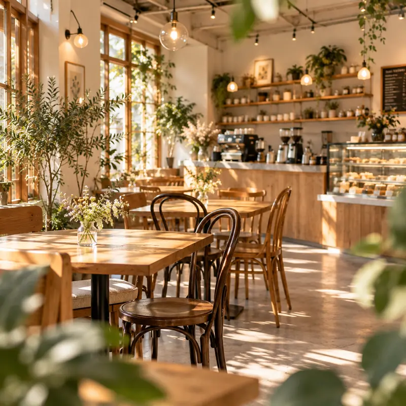
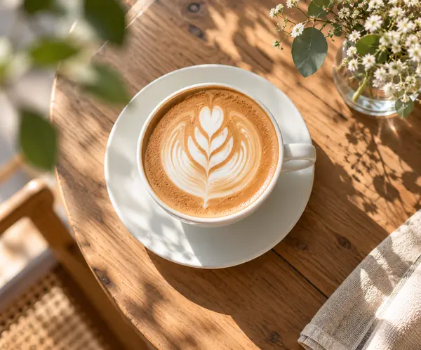
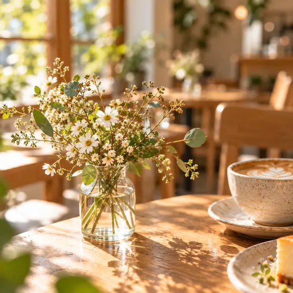
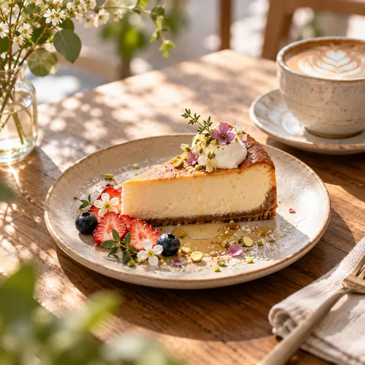
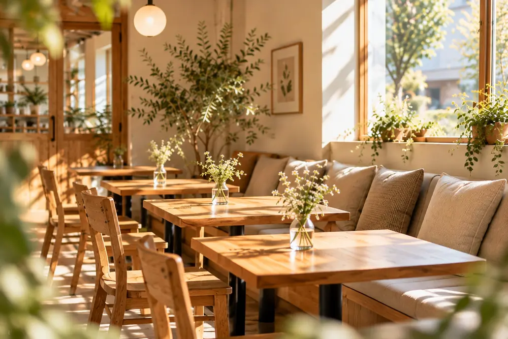
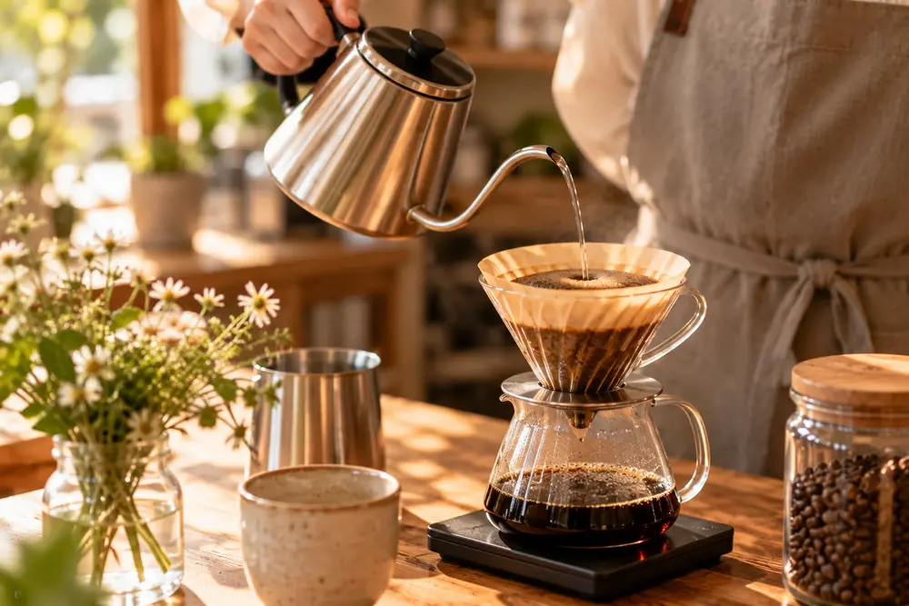
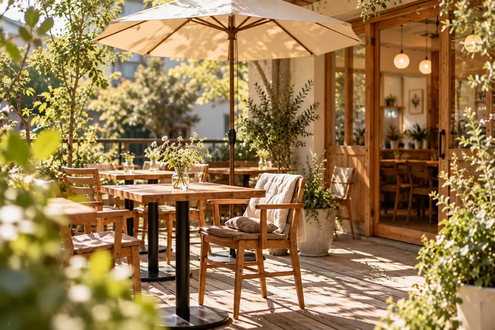

いつもの一杯に、 小さな花をひとつ添えて。 心がほどけていく時間を。




Concept
日常に、小さな特別を咲かせる場所

Café Bloomは、緑豊かな植物と木の温もりに囲まれた、街の小さな止まり木です。
朝の澄んだ空気の中でのモーニングも、夕暮れの読書の時間も。
訪れるたびに、心がほどける瞬間をお届けします。

一杯ずつ、丁寧に
世界各地の農園から届くシングルオリジン豆を自家焙煎。
ご注文ごとにハンドドリップで淹れています。

陽だまりのような空間
自然光が差し込む店内と、緑に囲まれたテラス席。
お気に入りの居場所を見つけてください。

季節の恵みを、お皿に
無農薬のエディブルフラワーや、契約農家の野菜を使った
手作りのフードとスイーツです。
Access
店舗情報・アクセス
- 住所
- 〒152-0035
東京都目黒区緑が丘2-14-8 Bloom Terrace 1F - アクセス
- 東急東横線・大井町線「自由が丘駅」北口より徒歩5分
- 営業時間
- 8:00 – 19:00（L.O. 18:30）
- 定休日
- 毎週火曜日（祝日の場合は営業、翌水曜休み）
- 席数
- 32席（店内24席／テラス8席）
- 電話
- 03-5489-8920
自由が丘駅北口を出て、九品仏川緑道沿いを緑が丘方面へ。右手の大きなオリーブの木が目印です。